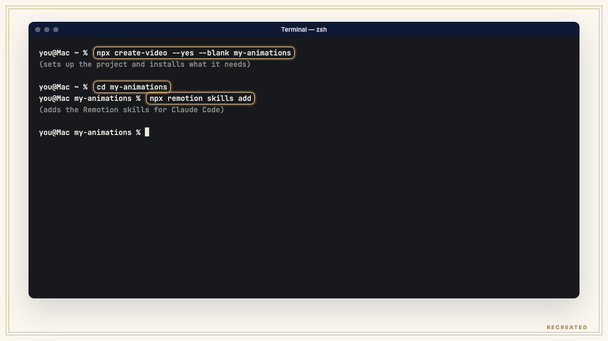
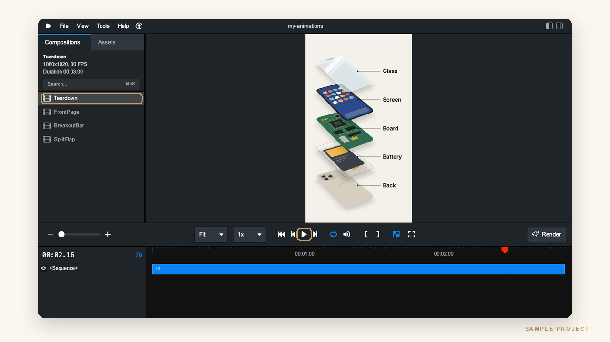
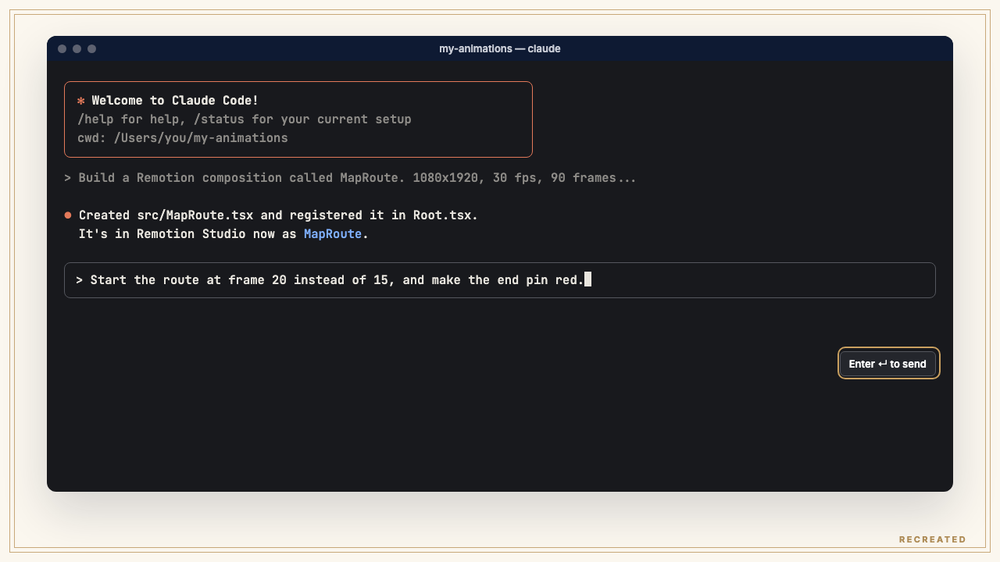
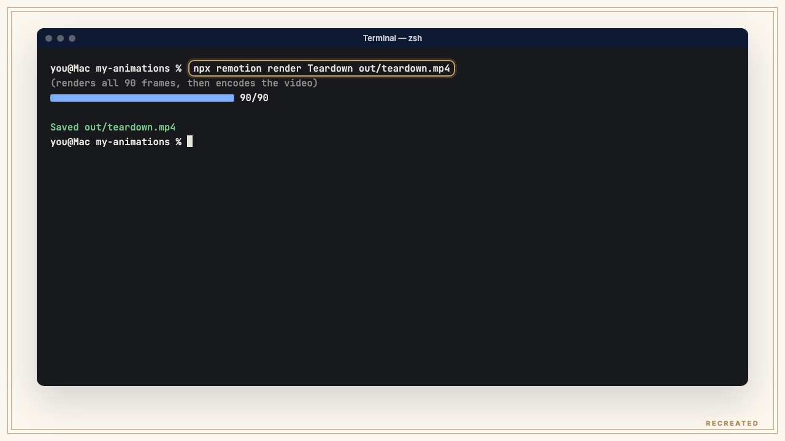

No editing app and no AI video model. You paste a prompt, Claude Code writes the animation in code, and you render a clean vertical mp4 for your reels.بلا برنامج مونتاج وبلا نموذج فيديو بالذكاء الاصطناعي. تلصق الأمر، فيكتب Claude Code الحركة بالكود، وتصدّر فيديو mp4 عموديًا نظيفًا لمقاطعك القصيرة.
> npx create-video --yes --blank my-animations
cd my-animations
npx remotion skills addSet up a blank Remotion project, connect Claude Code to it, and use 30 written-out prompts for 3D, paper, chart and interface effects you can drop on top of any talking-head video.أنشئ مشروع Remotion فارغًا، واربطه بـ Claude Code، واستخدم 30 أمرًا مكتوبًا بالتفصيل لمؤثرات ثلاثية الأبعاد وورقية وبيانية وواجهات تضعها فوق أي فيديو تتحدث فيه.
Remotion is a free, open source tool that turns code into video. Every frame is a web page, so anything you can draw in a browser you can animate: charts, 3D cards, maps, phone screens, big type. Claude Code writes that code for you.Remotion أداة مجانية مفتوحة المصدر تحوّل الكود إلى فيديو. كل إطار صفحة ويب، فكل ما يمكن رسمه في المتصفح يمكن تحريكه: رسوم بيانية، بطاقات ثلاثية الأبعاد، خرائط، شاشات هاتف، عناوين كبيرة. ويكتب Claude Code هذا الكود عنك.
The prompts are the part people get wrong. "Make a cool animation" gets you a bouncing logo. Each prompt here fixes the size, the look, the colours, the motion frame by frame and the text, so Claude has nothing left to guess. You swap the words in [brackets] for yours and paste.الأمر المكتوب هو ما يخطئ فيه معظم الناس. عبارة "اصنع حركة جميلة" تعطيك شعارًا يقفز. كل أمر هنا يحدد المقاس والشكل والألوان والحركة إطارًا بإطار والنص، فلا يبقى لـ Claude ما يخمّنه. استبدل الكلمات بين [الأقواس] بكلماتك ثم الصق.
Open Terminal in the folder where you keep projects and run these 3 lines. The first makes an empty Remotion project. The last adds Remotion's official agent skills, so Claude Code writes Remotion the way its makers recommend.افتح Terminal في المجلد الذي تحفظ فيه مشاريعك وشغّل هذه الأسطر الثلاثة. الأول ينشئ مشروع Remotion فارغًا، والأخير يضيف مهارات الوكلاء الرسمية من Remotion، فيكتب Claude Code بالطريقة التي يوصي بها صانعو الأداة.
npx create-video --yes --blank my-animations cd my-animations npx remotion skills add

In the same folder, start Remotion Studio. It opens in your browser, usually at localhost:3000. Leave it open: every animation Claude builds shows up in the left list, and you scrub it with the timeline at the bottom.في المجلد نفسه شغّل Remotion Studio. يفتح في المتصفح، عادة على localhost:3000. اتركه مفتوحًا: كل حركة يبنيها Claude تظهر في القائمة اليسرى، وتتنقّل فيها بالشريط الزمني في الأسفل.
npm run dev

Open a second Terminal window, go into the same folder and type claude. Pick one prompt from the next pages, change every [bracket] to your own words, paste it and press Enter. Claude writes the file and adds it to the project.افتح نافذة Terminal ثانية، وادخل إلى المجلد نفسه واكتب claude. اختر أمرًا من الصفحات التالية، وغيّر كل [قوس] إلى كلماتك، ثم الصقه واضغط Enter. يكتب Claude الملف ويضيفه إلى المشروع.
cd my-animations claude
Watch it in Studio, then tell Claude what to change. The motion in every prompt is numbered by frame, so you can be exact: "start the route at frame 20", "make the bars 20% slower", "swap blue for #E1306C". One change per message works best.شاهد الحركة في Studio ثم قل لـ Claude ما تريد تغييره. الحركة في كل أمر مرقّمة بالإطارات، فيمكنك أن تكون دقيقًا: "ابدأ المسار عند الإطار 20"، "اجعل الأعمدة أبطأ بنسبة 20%"، "استبدل الأزرق بـ #E1306C". تغيير واحد في كل رسالة هو الأفضل.

When it looks right, render it. Use the composition name from the prompt (Teardown, GlobeArcs...). The file lands in the out folder, ready to drop over your talking head in your editor.عندما تصبح الحركة كما تريد، صدّرها. استخدم اسم التكوين الموجود في الأمر (Teardown وGlobeArcs...). يُحفظ الملف في مجلد out، جاهزًا لتضعه فوق فيديوك في برنامج المونتاج.
npx remotion render Teardown out/teardown.mp4

انسخ الأوامر والنصوص كما هي باللغة الإنجليزية، فهي تعمل بدقة أكبر.
Build a Remotion composition called Teardown. 1080x1920, 30 fps, 90 frames. Look: a [phone] split into 5 flat layers (glass, screen, board, battery, back). CSS 3D, tilted 30 degrees, soft shadow under each layer, background #F4F1EA. Motion: frames 0-20 the stack sits closed. Frames 20-60 the layers spread apart vertically with a spring. Frames 45-75 a thin line and a label draw in next to each layer. Hold to the end. Text: labels [Glass, Screen, Board, Battery, Back], Inter 600, #111. One file in src/. Register it in Root.tsx. No images or video files, everything is drawn in code.
Build a Remotion composition called GlobeArcs. 1080x1920, 30 fps, 90 frames. Look: a dark navy globe (#0E1A33) made of small dots, drawn in SVG with an orthographic projection (no 3D library), slowly turning. Motion: the globe turns 40 degrees over the whole clip. From frame 15, glowing blue arcs (#0866FF) launch from [Beirut] to [Riyadh], [Dubai], [London] and [New York], one every 10 frames, each with a small pulse where it lands. Text: a caption at the bottom: [Clients in 5 countries], Inter 700, white. One file in src/. Register it in Root.tsx. No images or video files, everything is drawn in code.
Build a Remotion composition called BarCity. 1080x1920, 30 fps, 90 frames. Look: an isometric grid floor (CSS 3D, 55 degree tilt) on #F7F3EA. Each bar is a box building with a lighter top face. Motion: 7 buildings rise one after another from frame 10, each taking 12 frames with an ease-out. The last one is twice as tall and turns blue (#0866FF) at frame 70. Text: month labels [Jan to Jul] on the floor, and [+212%] above the tallest building. One file in src/. Register it in Root.tsx. No images or video files, everything is drawn in code.
Build a Remotion composition called CardFan. 1080x1920, 30 fps, 60 frames. Look: 3 rounded white cards with a soft shadow on a cream background (#F2EAD9), CSS 3D. Motion: frames 0-15 the cards sit stacked. Frames 15-40 they fan out like a hand of playing cards, left card rotates -14 degrees, right card +14. The middle card lifts toward the camera and scales to 1.08. Text: card titles [Starter], [Growth], [Done for you], big serif, one short line under each. One file in src/. Register it in Root.tsx. No images or video files, everything is drawn in code.
Build a Remotion composition called LogoSpin. 1080x1920, 30 fps, 90 frames. Look: the word [YOUR BRAND] as thick 3D letters: stack 24 copies of the text 1px apart in CSS 3D so it looks extruded. Front face white, sides #0866FF, black background. Motion: the word turns from -60 to +20 degrees on the Y axis with ease-in-out, a light sweep crosses the front face at frame 50. One file in src/. Register it in Root.tsx. No images or video files, everything is drawn in code.
Build a Remotion composition called FloatingPhone. 1080x1920, 30 fps, 90 frames. Look: a phone frame with rounded corners floating at a slight 3D tilt over a soft gradient (#EAF1FF to #FFFFFF). Inside: a simple app home screen drawn with divs. Motion: the phone bobs up and down 10px the whole time. From frame 20, 3 notification banners drop in from the top one by one, each with a small bounce. Text: notifications [New lead: Sara], [Booked: Thursday 3pm], [Paid: $1,200]. One file in src/. Register it in Root.tsx. No images or video files, everything is drawn in code.
Build a Remotion composition called MapRoute. 1080x1920, 30 fps, 90 frames. Look: a flat paper map (#EFE6D2) with faint street lines drawn in SVG, tilted back 35 degrees in CSS 3D. Motion: frame 10 a pin drops at the start. Frames 15-65 a thick blue dashed route draws itself along a curvy path (SVG stroke-dashoffset). Frame 65 a second pin drops at the end with a ring that ripples out. Text: a label at the end pin: [Day 30], Inter 700. One file in src/. Register it in Root.tsx. No images or video files, everything is drawn in code.
Build a Remotion composition called WordCube. 1080x1920, 30 fps, 90 frames. Look: a cube in CSS 3D, each face a solid colour block with one bold word. Faces #0E1A33, #0866FF, #FBF7EF. Motion: the cube turns a quarter turn every 30 frames with a spring that overshoots a little, so the viewer reads [Script], then [Film], then [Post]. One file in src/. Register it in Root.tsx. No images or video files, everything is drawn in code.
Build a Remotion composition called FrontPage. 1080x1920, 30 fps, 90 frames. Look: a newspaper front page on warm paper (#F3EEE3): masthead, a big headline, 3 columns of grey text lines, a photo box with hatching. Serif type. Motion: frames 0-20 the masthead slides in. Frames 20-45 the headline types in letter by letter. Frames 45-75 the columns fill line by line. The whole page slowly pushes in, scale 1 to 1.06. Text: masthead [THE DAILY OPERATOR], headline [Small business cuts 10 hours a week with Claude]. One file in src/. Register it in Root.tsx. No images or video files, everything is drawn in code.
Build a Remotion composition called MarkerNote. 1080x1920, 30 fps, 60 frames. Look: a sentence in big black serif on white, like a printed page. Motion: frames 10-30 a yellow highlighter swipe draws behind [one key phrase] left to right. Frames 30-45 a red hand-drawn circle (SVG path, slightly wobbly) draws around [one word]. Frames 45-60 a small arrow and a scribbled note appear: [this part]. Text: the sentence: [Most owners lose 10 hours a week to admin]. One file in src/. Register it in Root.tsx. No images or video files, everything is drawn in code.
Build a Remotion composition called StickySort. 1080x1920, 30 fps, 90 frames. Look: a cork-coloured board (#C9A97A) with 6 square sticky notes in yellow, pink and blue, each with a hand-written style word. Motion: frames 0-30 the notes slap onto the board one by one at random angles with a little shake. Frames 40-75 they slide into 3 neat columns with headers [Do], [Delegate], [Automate]. Text: note words [Invoices, Replies, Reports, Posting, Booking, Follow-ups]. One file in src/. Register it in Root.tsx. No images or video files, everything is drawn in code.
Build a Remotion composition called TornReveal. 1080x1920, 30 fps, 60 frames. Look: a top sheet of kraft paper (#B88A55) covering a white sheet with a headline. The tear edge is a jagged SVG path with a soft shadow. Motion: frames 10-40 the top sheet tears away diagonally, the edge following the jagged path, revealing the headline underneath. Frames 40-60 the headline settles with a small scale bounce. Text: headline [Stop doing it by hand.], heavy serif. One file in src/. Register it in Root.tsx. No images or video files, everything is drawn in code.
Build a Remotion composition called Blueprint. 1080x1920, 30 fps, 90 frames. Look: blueprint blue (#1C4E8A) with a fine white grid. Everything is drawn as thin white lines in SVG. Motion: one continuous line draws a simple funnel diagram: 3 boxes, arrows between them, then a dollar sign at the bottom (stroke-dashoffset from frame 0 to 70). Labels fade in next to each box as the line reaches it. Text: boxes [Reel], [DM], [Call], monospace labels. One file in src/. Register it in Root.tsx. No images or video files, everything is drawn in code.
Build a Remotion composition called Receipt. 1080x1920, 30 fps, 90 frames. Look: a thermal receipt (white, slightly grey edges, zigzag bottom) coming out of a dark slot at the top of the frame. Monospace type. Motion: the receipt slides down line by line from frame 0 to 70, each line appearing as it exits the slot. At frame 72 the total line flashes once. Text: lines [Writing posts 6h], [Replying to DMs 4h], [Reports 2h], total [12 HOURS SAVED]. One file in src/. Register it in Root.tsx. No images or video files, everything is drawn in code.
Build a Remotion composition called Stamp. 1080x1920, 30 fps, 60 frames. Look: a document page on a wooden desk colour (#8B5E3C), grey text lines on the page. Motion: frames 0-20 a red rubber stamp comes down from off screen. Frame 22 it hits: the camera shakes for 6 frames and the ink mark appears, slightly rough at the edges, rotated -8 degrees. Frames 30-60 the stamp lifts away. Text: stamp word [APPROVED]. One file in src/. Register it in Root.tsx. No images or video files, everything is drawn in code.
Build a Remotion composition called Odometer. 1080x1920, 30 fps, 60 frames. Look: huge digits in white on #0E1A33, each digit in its own window like a car odometer. Motion: each digit column rolls up from 0 to its target between frames 5 and 45, the right-most column spinning fastest, all landing with a small overshoot. Text: the number [48,700] and a label under it [followers in 90 days]. One file in src/. Register it in Root.tsx. No images or video files, everything is drawn in code.
Build a Remotion composition called BreakoutBar. 1080x1920, 30 fps, 90 frames. Look: a clean bar chart on white, 5 grey bars, thin axis lines, a top border line across the chart. Motion: bars grow one by one from frame 5. The last bar is blue (#0866FF) and keeps growing past the top line, cracks it (2 SVG crack lines) and goes off the top of the frame at frame 70, the chart shaking for 4 frames. Text: bar labels [2022 to 2026], and [this year] beside the blue bar. One file in src/. Register it in Root.tsx. No images or video files, everything is drawn in code.
Build a Remotion composition called GlowLine. 1080x1920, 30 fps, 60 frames. Look: dark background (#0B0F1A), a faint grid, one line chart in bright blue. Motion: frames 0-40 the line draws left to right with a glowing dot at its tip and a soft fading trail. At the peak (frame 40) a label card pops up with a spring. Text: the peak label [Best month: $18K]. One file in src/. Register it in Root.tsx. No images or video files, everything is drawn in code.
Build a Remotion composition called Calendar30. 1080x1920, 30 fps, 90 frames. Look: a month grid of 30 rounded squares on #FBF7EF, day numbers in small grey type. Motion: from frame 5 the squares fill blue one by one (2 frames each). Every 7th square gets a small star. At frame 70 a banner drops over the grid. Text: banner [30 days. 30 reels.]. One file in src/. Register it in Root.tsx. No images or video files, everything is drawn in code.
Build a Remotion composition called Donut. 1080x1920, 30 fps, 60 frames. Look: a thick donut ring, grey track, blue fill (#0866FF), on white. Motion: the fill sweeps from 0 to [73] percent between frames 5 and 45 with ease-out. The number in the middle counts up in sync and pulses once when it lands. Text: under the ring: [of DMs answered by AI]. One file in src/. Register it in Root.tsx. No images or video files, everything is drawn in code.
Build a Remotion composition called BeforeAfter. 1080x1920, 30 fps, 60 frames. Look: the frame split down the middle. Left half grey and dull, right half white and bright. Motion: frames 0-20 the left number shows. Frames 20-40 a vertical slider line wipes from left to right with a small handle. Frames 40-60 the right number counts down to its value and turns green. Text: left [Before: 14 hours], right [After: 2 hours], label at the top [Weekly admin]. One file in src/. Register it in Root.tsx. No images or video files, everything is drawn in code.
Build a Remotion composition called DotGrid. 1080x1920, 30 fps, 60 frames. Look: a 10 by 10 grid of small grey dots on #0E1A33. Motion: from frame 5, [27] dots light up blue in a wave from the top-left corner, 1 frame apart. At frame 45 the lit dots pulse together once. Text: big number above: [27%], small line under: [of leads come from one keyword]. One file in src/. Register it in Root.tsx. No images or video files, everything is drawn in code.
Build a Remotion composition called SplitFlap. 1080x1920, 30 fps, 90 frames. Look: an airport departure board: black tiles with white letters, each tile split in the middle with a thin dark line. Motion: every tile flips through random letters with a fast top-half fold animation, then lands on its letter. Tiles land left to right between frames 15 and 60, each with a tiny bounce. Text: the words [NOW BOARDING] on row 1 and [YOUR AI TEAM] on row 2. One file in src/. Register it in Root.tsx. No images or video files, everything is drawn in code.
Build a Remotion composition called DMPile. 1080x1920, 30 fps, 90 frames. Look: an Instagram style inbox screen drawn with divs: white, rounded avatar circles, names, a message preview line. No real logos. Motion: new message rows slide in at the top every 6 frames, pushing the list down, while a red badge counter on top climbs from 0 to [47]. Text: names and previews are samples: [Maya: price?], [Omar: link pls], [Lina: MOTION]... One file in src/. Register it in Root.tsx. No images or video files, everything is drawn in code.
Build a Remotion composition called TerminalSite. 1080x1920, 30 fps, 90 frames. Look: a dark terminal window (#16181D) with a navy title bar, monospace text. Motion: frames 0-30 a command types in: [claude "build my landing page"]. Frames 30-45 three fast green check lines print. Frames 45-75 the terminal window morphs (scale and border-radius) into a light website card with a hero title and a button. Text: website title [Karemops.ai], button [Book a call]. One file in src/. Register it in Root.tsx. No images or video files, everything is drawn in code.
Build a Remotion composition called SlamType. 1080x1920, 30 fps, 60 frames. Look: pure black background, huge condensed white type filling the width. Motion: 3 words slam in one at a time at frames 5, 20 and 35. Each word starts at scale 3, hits scale 1 in 4 frames, and the frame shakes for 5 frames on impact. The last word is blue. Text: words [STOP], [POSTING], [BLIND]. One file in src/. Register it in Root.tsx. No images or video files, everything is drawn in code.
Build a Remotion composition called Assemble. 1080x1920, 30 fps, 60 frames. Look: white background, one bold word in navy. Motion: the letters start scattered across the frame at random positions and angles, blurred, then fly into place between frames 5 and 40 with springs, each letter a few frames apart. A thin blue underline draws under the word at frame 45. Text: the word [AUTOMATE]. One file in src/. Register it in Root.tsx. No images or video files, everything is drawn in code.
Build a Remotion composition called SearchBar. 1080x1920, 30 fps, 60 frames. Look: a big rounded search bar in the middle of a white screen with a magnifier icon (SVG). Motion: frames 5-30 a query types in with a blinking cursor. Frames 30-45 an autocomplete list drops down with 3 suggestions, the first one highlighted. Text: query [how to get clients with], suggestions [Instagram reels], [cold email], [a free guide]. One file in src/. Register it in Root.tsx. No images or video files, everything is drawn in code.
Build a Remotion composition called ClickDone. 1080x1920, 30 fps, 60 frames. Look: a clean app card with a big blue button on #F4F6FA, drawn with divs. Motion: frames 0-20 a mouse cursor (SVG arrow) glides to the button. Frame 22 it clicks: the button presses in and a ripple spreads. Frames 30-45 the button turns green with a check mark, and a toast slides up from the bottom. Text: button [Send proposal], toast [Sent to 12 clients]. One file in src/. Register it in Root.tsx. No images or video files, everything is drawn in code.
Build a Remotion composition called LockScreen. 1080x1920, 30 fps, 90 frames. Look: a phone lock screen filling the frame: blurred blue gradient wallpaper, big thin clock at the top. Motion: frames 0-15 the clock fades in. From frame 20, 4 notifications stack up from the bottom, each with a soft spring and a light haptic shake of the phone. Frame 75 the top one expands. Text: clock [9:41], notifications [Stripe: You got paid], [Calendar: Call with Ali], [ManyChat: 23 new DMs], [Claude: Your report is ready]. One file in src/. Register it in Root.tsx. No images or video files, everything is drawn in code.
Build one this week, drop it over a reel, and see if people watch longer.جرّبه هذا الأسبوع على عمل حقيقي، ثم أخبرني بالنتيجة عبر رسالة على إنستغرام، فأنا أقرأ الرسائل بنفسي.
AI operator and educator. I build AI systems for business owners: content, ads and automation, with Claude Code at the center. If you want it built for you, DM me.مشغّل ومعلّم في مجال الذكاء الاصطناعي. أبني أنظمة ذكاء اصطناعي لأصحاب الأعمال في المحتوى والإعلانات والأتمتة، ويكون Claude Code في قلبها. إذا أردت أن أبنيها لك، راسلني.